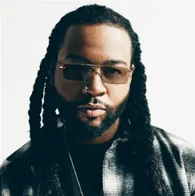

THE LIST
PartyNextDoor

Fun Facts
PARTYNEXTDOOR's career took off in 2013 when he became the first artist signed to Drake's OVO Sound label and released his self-titled debut project. In 2014, he released PARTYNEXTDOOR TWO, which featured "Recognize" with Drake, and the PNDColours EP. In 2016, he released PARTYNEXTDOOR 3 (P3), one of his most recognized projects, featuring songs like "Come and See Me" and "Not Nice." That same year, he reached another major milestone behind the scenes by co-writing Rihanna's "Work", featuring Drake, which spent nine consecutive weeks at No. 1 on the Billboard Hot 100. In 2017, he also co-wrote DJ Khaled's "Wild Thoughts," featuring Rihanna and Bryson Tiller, which peaked at No. 2 on the Billboard Hot 100. These accomplishments established him as more than just a singer; he became one of the influential songwriters and producers behind major hits in contemporary R&B and pop.
In 2020, he released PARTYMOBILE, featuring "Believe It" with Rihanna, marking another important moment in his solo career. After taking some time away from releasing a full-length album, he returned with PARTYNEXTDOOR 4 in 2024, showing his continued growth as an artist. Then came one of the biggest milestones of his career: in February 2025, he teamed up with Drake to release $ome $exy $ongs 4 U, which debuted at No. 1 on the Billboard 200. It became his first chart-topping album in the United States. His journey from making music in his bedroom in Mississauga to becoming a Grammy-nominated songwriter, platinum-selling artist and Billboard-charting collaborator is a major accomplishment.
Top Albums